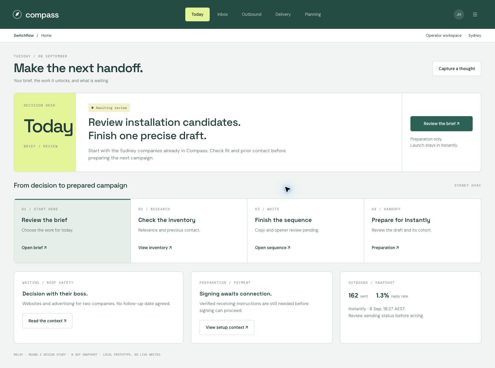
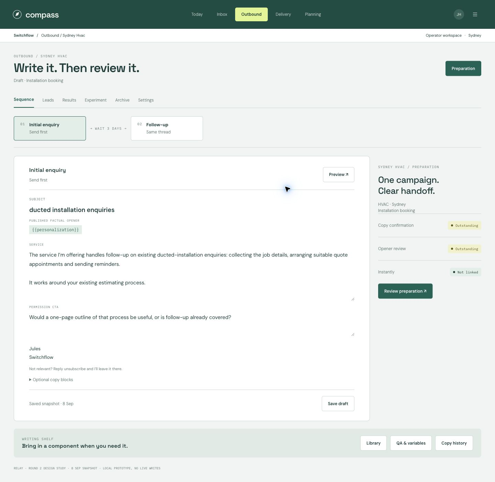
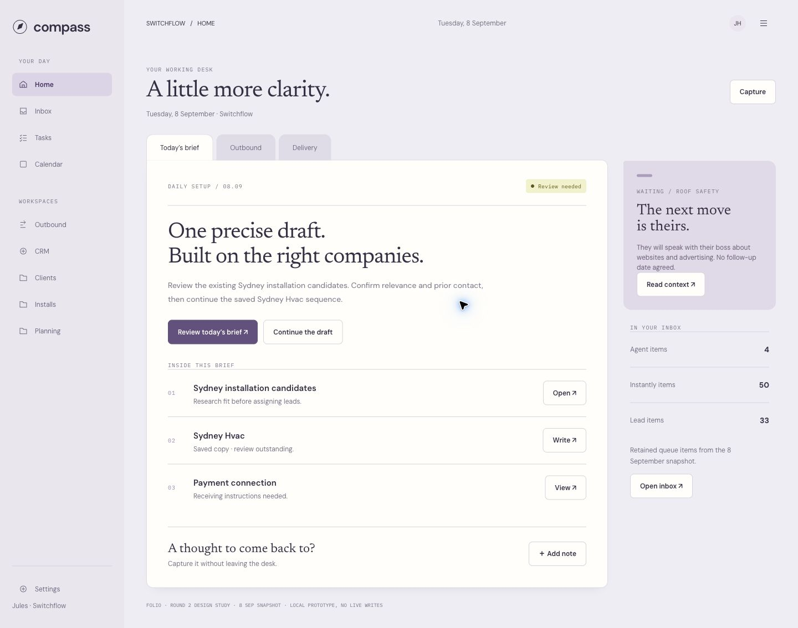
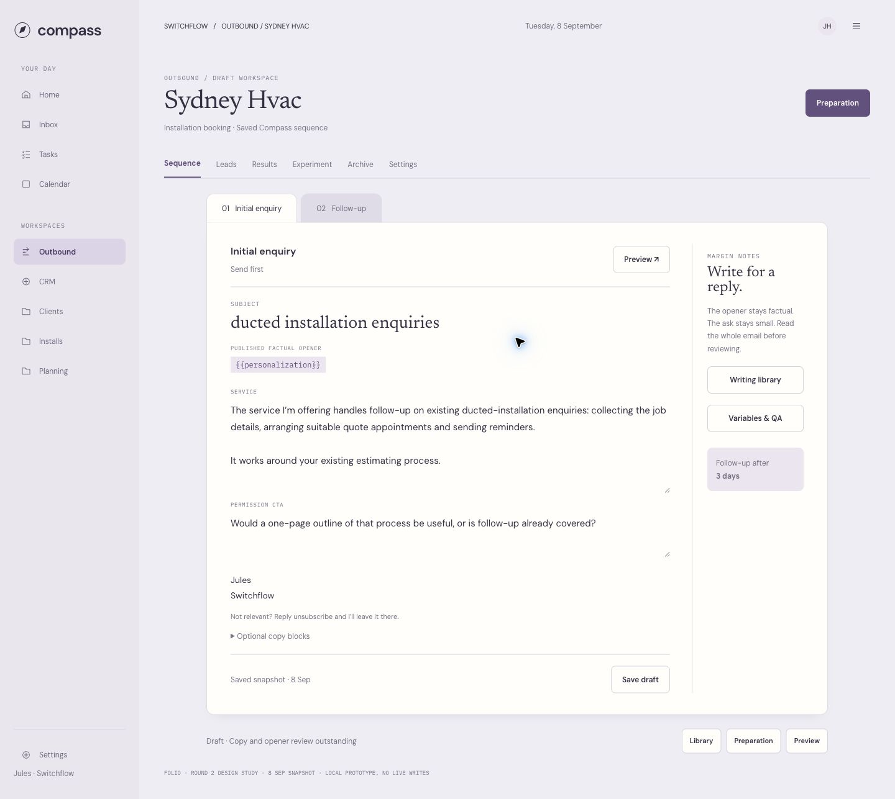
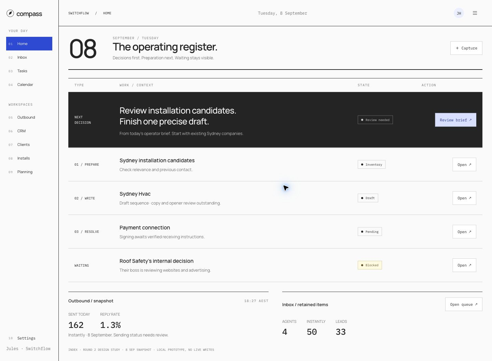
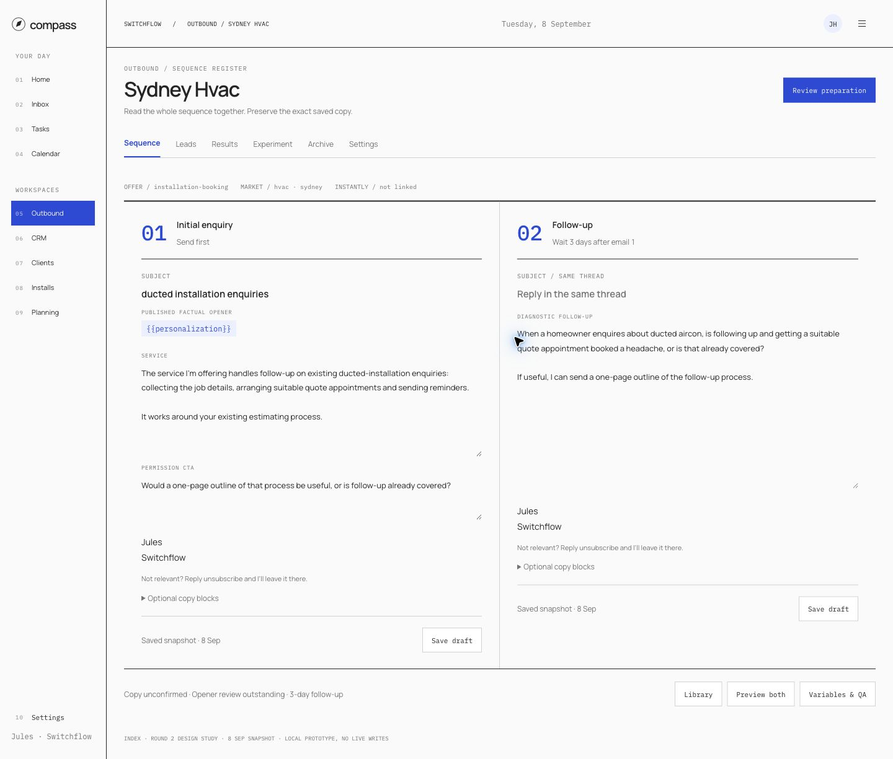

04 / HANDOFF-ORIENTED
Relay
Preparation stages and the next useful handoff.

HORIZONTAL STEPS / WRITING SHELF

Three new structures · Same Compass snapshot
Direction approval pending
Preparation stages and the next useful handoff.


A working folder with context close at hand.


Direct actions and compact, expandable records.

